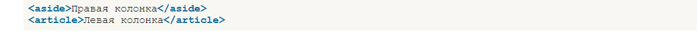
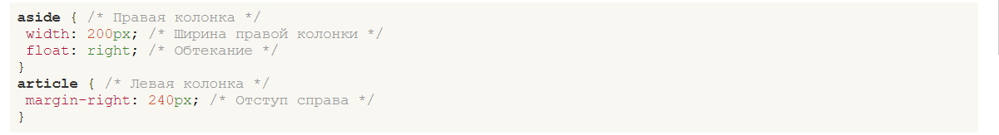
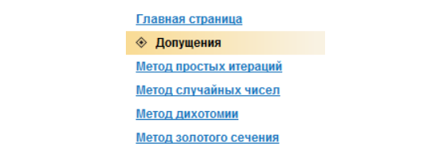
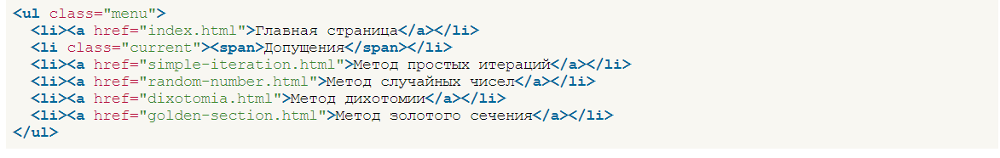
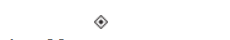
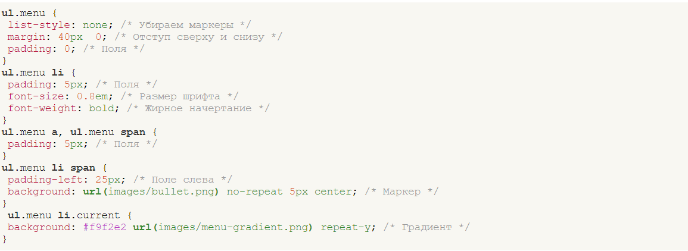
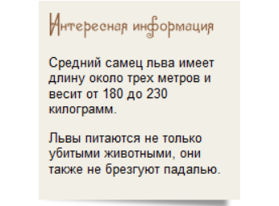
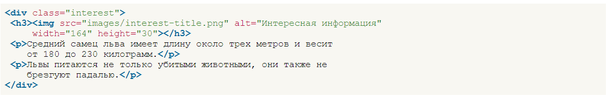
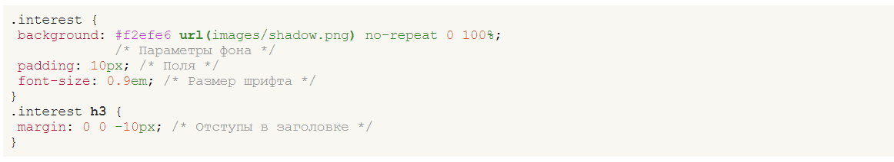

Внутрішніми будемо називати всі веб-сторінки сайту, крім головної. Вони засновані на двоколоночному фіксованому макеті, де в правій колонці розташовується навігація (посилання по сайту) та блок з цікавою інформацією, а в лівій текст статті.
Двохколоночний макет
Это самый простой из существующих макетов после одноколоночного, неудивительно, что для его построения существует несколько способов. Воспользуемся сочетанием свойств float и margin-right, которые уже неоднократно упоминались в книге. Для правой колонки необходимо установить float со значением right, а для левой margin-right со значением равным ширине правой колонке и расстоянию между колонками. В коде при этом плавающий элемент идёт первым, поэтому вначале следует правая колонка.
У стилі для елемента <aside> вказуємо його ширину (width) і включаємо вирівнювання праворуч за допомогою float. Для елемента <article> лише вказуємо margin-right.
Навігація на сайті
Традиційно для створення різних меню застосовується список, тобто комбінація тегів <ul> і <li>. Це з тим, що маркований список сам собою нагадує меню, до того ж легко модифікується з допомогою стилів. Навігація на нашому навчальному сайті зроблена у вигляді вертикального меню, тому логічно буде скористатися списком. Тільки його доведеться змінити під наші потреби – прибрати маркери та виділити поточний пункт меню градієнтним фоном та мальованим маркером.
Зображення можливаго меню сайту
Код меню на всіх сторінках сайту практично однаковий тільки змінюється поточний пункт.
Код меню
Тут клас current призначений виділення поточного пункту меню фоновим малюнком. Додатковий тег <span> потрібний для встановлення малюнка маркера. Можна було піти іншим шляхом і увімкнути маркер через властивість list style-image, але браузери такий маркер по-різному позиціонують, тому скористаємося універсальним рішенням та вставимо маркер як фоновий малюнок. Для початку потрібно підготувати зображення. Нам знадобиться градієнтний малюнок розміром 192х25 пікселів. Чому розмір цього малюнка не дорівнює 200 пікселів, як ширина колонки? Ми знову скористаємося тією хитрістю, що у нас колір у градієнта праворуч збігається з кольором тла і плавно переходить до нього. Подібне хитрощі вже застосовувалося для створення градієнта основної частини сторінки і дозволило зменшити розмір зображення.
Градієнт для меню
Як маркер для поточного пункту меню ставиться невелике зображення на прозорому тлі
Маркер пункту меню
Стиль для створення меню показаний у прикладі
Маркер виводиться фоном, тому текст накладається зверху. Для правильного відображення текст доводиться вправо зрушувати властивістю padding-left. У параметрах властивості background малюнок встановлюється центром вертикалі і зміщується вправо від краю п'ять пікселів.
Блок «Цікава інформація»
Блок є кольоровий прямокутник, всередині якого виводиться заголовок і текст. Під блоком відображається невелика тінь
Вид блоку
Таку тінь можна вивести у вигляді звичайного зображення або картинки фону. Ми намагаємося зробити код більш ефективним, тому чим менше тегів використовується, тим краще. По можливості оформлення необхідно переносити в стилі, так що тінь виводитимемо стильовою властивістю background. У блоці, крім тіні, використовується фоновий колір, потрібно врахувати цей момент і зробити малюнок тіні на білому тлі, щоб при накладенні він перекривав фон.
Код для блоку виходить досить простим і містить лише заголовок та текст.
Заголовок блоку у вигляді малюнка поміщений усередину тега <h3>, що дозволяє при відключенні зображень вивести альтернативний текст збільшеного розміру. Сам стиль показаний нижче.
Фоновый рисунок прижимается к нижнему краю блока, поэтому в параметрах background указываем left bottom или 0 100%, как в примере.